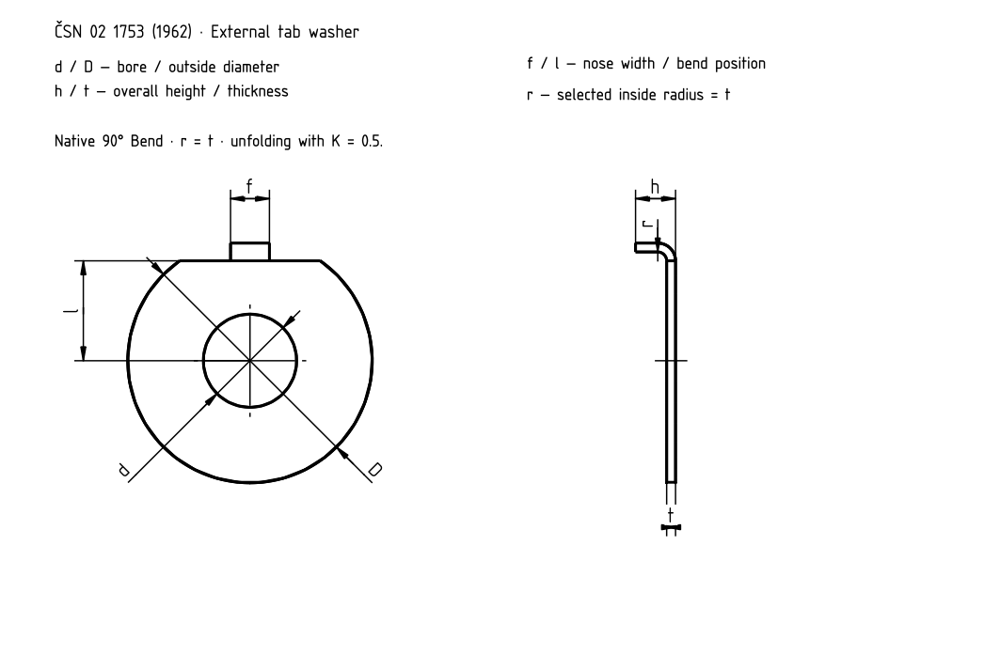

External tab washer
CS
EN
DE
FR
RU

ČSN 02 1753 (1962) · native model drawing
External tab washer
External tab washer
M
d [mm]
D [mm]
f [mm]
l [mm]
h [mm]
t [mm]
M4
4.3
14
2.5
5.5
2.1
0.3
M5
5.3
17
3.5
7
2.5
0.5
M6
6.4
18
3.5
7.5
2.5
0.5
M8
8.4
22
3.5
9
3.6
0.8
M10
10.5
26
4.5
10
4.6
0.8
M12
13
30
4.5
12
5
1
M14
15
32
4.5
13
5
1
M16
17
36
5.5
15
5
1
M18
19
40
6
17
5
1
M20
21
42
6
18
5
1
M22
23
46
7
20
5
1
M24
25
50
7
21
6
1
M27
28
58
8
23
9
1.5